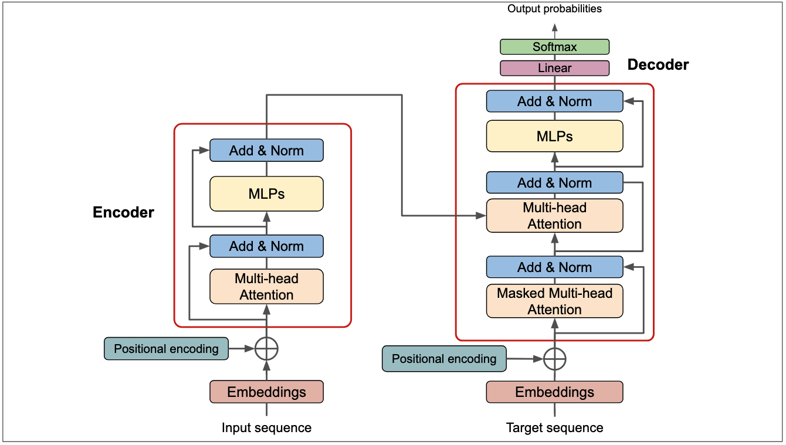

Tolkien & Gen AI
Luis García Castro
El camino hacia GenAI
Definiciones
IA: "Disciplina científica que se ocupa de crear programas informáticos que ejecutan operaciones comparables a las que realiza la mente humana, como el aprendizaje o el razonamiento lógico" DRAE
Machine Learning: "Campo de estudio que confiere a los ordenadores la capacidad de aprender sin ser programados explícitamente.” Arthur Samuel, 1959
Aprendizaje en IA


Supervisado
No supervisado
Ejemplos de aprendizaje
AlphaGo (2015)
AlphaGo Zero (2017)
Limitaciones
Gran cantidad de datos
Sesgos en los datos

Explicabilidad
Explicabilidad


Retos y limitaciones
- Gran cantidad de datos
- Sesgos en los datos
- Interpretabilidad
- Especialización
- Requerimientos computacionales
- Mantenimiento y actualización
- Seguridad, privacidad, ...
Large Language Models
Hitos clave

Deep Learning (2012)
Transformers (2017)
Arquitectura de un Transformer
Entrenando un LLM
- En un agujero en el suelo vivía un Hobbit
- La capital de Francia es París
- La energía no se crea ni se destruye, solamente se transforma
- Los tipos de interés subirán a partir de Enero
- def to_lower_case(string):
return string.lower() - Emosido engañados
GPT-1 (2018)
GPT-2 (2019)
GPT-3 (2020)
Comportamiento emergente
Punto de inflexión con GPT-3
Embeddings

King - Man + Woman = Queen

Doctor - Man + Woman = Nurse


Unimodal vs Multimodal
Multimodal Recursivo
Analyzing Recursiveness in Multimodal Generative Artificial Intelligence: Stability or Divergence?
¿Es la IA "inteligente"?
¿Es la IA "inteligente"?


Test de Turing
Test de Voight-Kampff
Indetectable
Preciso
¡Manos a la obra!
Premios Bilbo
El Hobbit según...
Movie vs Book
Promociona tu Mereth